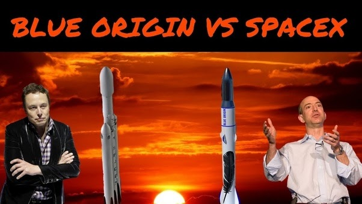

The Race to Win the Universe

The Longest Race in the Galaxy
Written and Coded by Yabriel Rodriguez
Guess who the two richest people in the world are. Correct! Jeff Bezos (189 billion dollars) and Elon Musk (155 billion dollars). Plus there's a french guy and his family.
How much is 150 billion dollars? That's 150,000 million dollars. You probably know teachers or other people who have at least $150,000 saved up for their retirement. Those people can spend $2 for a cup of coffee without even thinking about it.
Since Jeff Bezos and Elon Musk have a million dollars for every dollar these people who throw down $2 for a cup of coffee have. So Jeff Bezos and Elon Musk can drop $2 million without thinking about it.
What do Jeff Bezos and Elon Musk do with all their money? They make space rockets and try to sell them to NASA. I don't know what else they want to do with rockets. Maybe they know something we don't know about having to get off planet Earth?
So Bezos's company Blue Origin and Musk's company SpaceX have been trying to get NASA to give them a contract to make space rockets to take people to the moon starting in 2024.
Musk and Bezos founded their space exploration companies at about the same time, Bezos founded his in 2000 and Elon founded his in 2002. But SpaceX has accomplished much more in a much faster time.
Elon launched his first rockets in 2008, which won him contracts from NASA and also the Pentagon. NASA already relies on SpaceX to deliver supply and cargo to the international Space Station. Since last year SpaceX has launched more than 3 missions to the orbiting laboratory.
Guess who won the contract? Of course, Elon Musk won the contract.
Blue Origin is falling far behind Spacex after losing billions of dollars. Recently, a Bezos rocket was not able to get up to orbit. Elon made a tweet about it: “Can’t get it up (to orbit) lol.”
But Bezos is not giving up. He is trying to get his own contract for 10 billion dollars from NASA. That may seem like a lot of money to you, but for Bezos that's about $10,000, which is half what it costs to buy a car. That's not very much!.
I think Bezos probably doesn't like losing. Also, the Amazon logo looks a little like a sideways rocket: